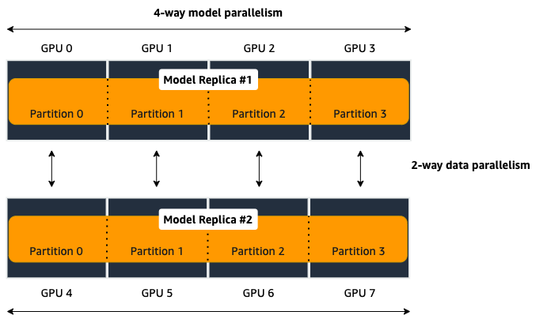

Run a Distributed Training Job Using the SageMaker Python SDK¶
Walk through the following pages to learn about the SageMaker model parallel library’s APIs to configure and enable distributed model parallelism through an Amazon SageMaker estimator.
Configuration Parameters for distribution¶
Amazon SageMaker’s TensorFlow and PyTorch estimator objects contain a distribution parameter,
which you can use to enable and specify parameters for SageMaker distributed training.
The SageMaker model parallel library internally uses MPI.
To use model parallelism, both smdistributed and MPI must be enabled
through the distribution parameter.
The following code example is a template of setting up model parallelism for a PyTorch estimator.
import sagemaker
from sagemaker.pytorch import PyTorch
smp_options = {
"enabled":True,
"parameters": {
...
}
}
mpi_options = {
"enabled" : True,
...
}
smdmp_estimator = PyTorch(
...
distribution={
"smdistributed": {"modelparallel": smp_options},
"mpi": mpi_options
}
)
smdmp_estimator.fit()
Tip
This page provides you a complete list of parameters you can use when you construct a SageMaker estimator and configure for distributed training.
To find examples of how to construct a SageMaker estimator with the distributed training parameters, see Launch a SageMaker Distributed Model Parallel Training Job in the SageMaker’s Distributed Model Parallel developer guide.
Table of Contents
Parameters for smdistributed¶
You can use the following parameters to initialize the library
configuring a dictionary for modelparallel, which goes
into the smdistributed option for the distribution parameter.
Note
partitions for TensorFlow and pipeline_parallel_degree for PyTorch are required parameters.
All other parameters in the following
table are optional.
Common Parameters¶
Parameter |
Type / Valid values |
Default |
Description |
|---|---|---|---|
|
int |
Required. The number of partitions to split the model into.
In case of |
|
|
int |
1 |
The number of microbatches to perform pipelining over. 1 means no pipelining. Batch size must be divisible by the number of microbatches. |
|
|
|
The pipeline schedule. |
|
|
|
Determines the distribution mechanism of transformer layers.
If optimizing |
|
|
|
Determines the mapping of model partitions onto physical devices.
When hybrid model/data parallelism is used, In case of the permutation letters, Note: For TensorFlow, tensor parallelism is not implemented and
available parameter values are only |
|
bool |
|
Enable auto-partitioning. If disabled, |
|
int |
|
Required if |
TensorFlow-specific Parameters¶
Parameter |
Type / Valid values |
Default |
Description |
|---|---|---|---|
|
bool |
|
Whether the model partitions should be contiguous. If true, each partition forms a connected component in the computational graph, unless the graph itself is not connected. |
|
bool |
|
Must be set to |
PyTorch-specific Parameters¶
Parameter |
Type / Valid values |
Default |
Description |
|---|---|---|---|
|
float [0.0, 1.0] |
|
The weight of memory balancing in the auto-partitioni ng objective, as opposed to balancing computational load. If 0.0, the library only tries to balance computation; if 1.0 the library only tries to balance the memory use. Any value in between interpolates between these extremes. |
|
bool |
|
Must be set to True if hybrid model/data parallelism is used with DistributedDataParallel. DistributedDataParallel is used with NCCL backend, and uses the MASTER_PORT provided by SageMaker. |
|
int |
|
This is the maximum number of microbatches that are simultaneously in execution during pipelining. Jointly scaling batch size and number of microbatches can often mitigate the pipeline bubble overhead, but that can lead to increased memory usage if too many microbatches are simultaneously in execution. In such cases setting the number of active microbatches to a lower number can help control memory usage. By default this is set to two plus the number of partitions of the model. |
|
bool |
|
Setting this to true ensures that the execution server for pipelining executes requests in the same order across all data parallel ranks. |
|
bool |
False |
Enables activation
offloading. To improve GPU memory usage, use activation offloading
only when (1) the |
|
int |
4 |
Specify the number of pipeline tasks. This determines how early the activations should be loaded back to the GPU, expressed in number of pipeline tasks. Smaller value indicates that activations are loaded closer in time to when they are needed for backward pass. Setting this value too small might improve memory usage, but might potentially cause throughput loss and GPU bottlenecks during the CPU-to-GPU data transfer. |
|
int |
1 |
The number of devices over which the tensor parallel modules will be distributed.
If |
|
bool |
|
To run FP16 training, add |
|
bool |
|
If |
|
bool |
|
If |
|
bool |
|
If |
|
bool |
False |
Skips the initial tracing step. This can be useful in very large models where even model tracing at the CPU is not possible due to memory constraints. |
|
int |
1 |
To run a training job using sharded data parallelism, add this parameter and specify a number greater than 1. Sharded data parallelism is a memory-saving distributed training technique that splits the training state of a model (model parameters, gradients, and optimizer states) across GPUs in a data parallel group. For more information, see Sharded Data Parallelism. |
|
int |
5e8 |
Configuration parameter for sharded data parallelism (for |
|
int |
1e6 |
Specifies the size of a parameter tensor in number of elements that can persist at each GPU. Sharded data parallelism splits each parameter tensor across GPUs of a data parallel group. If the number of elements in the parameter tensor is smaller than this threshold, the parameter tensor is not split; this helps reduce communication overhead because the parameter tensor is replicated across data-parallel GPUs. |
|
int |
1e9 |
Specifies the maximum number of parameters that can simultaneously be in a recombined training state during the forward and backward pass. Parameter fetching with the AllGather operation pauses when the number of active parameters reaches the given threshold. Note that increasing this parameter increases the memory footprint. |
|
bool |
True |
If set to True, the AllGather operation runs hierarchically: it runs within each node first, and then runs across nodes. For multi-node distributed training jobs, the hierarchical AllGather operation is automatically activated. |
|
float |
1.0 |
Specifies a threshold for gradient clipping the L2 norm of the gradients before propagating them backward through the model parameters. When sharded data parallelism is activated, gradient clipping is also activated. The default threshold is 1.0. Adjust this parameter if you have the exploding gradients problem. |
Parameters for mpi¶
For the "mpi" key, a dict must be passed which contains:
"enabled": Set toTrueto launch the training job with MPI."processes_per_host": Specifies the number of processes MPI should launch on each host. In SageMaker a host is a single Amazon EC2 ml instance. The SageMaker distributed model parallel library maintains a one-to-one mapping between processes and GPUs across model and data parallelism. This means that SageMaker schedules each process on a single, separate GPU and no GPU contains more than one process. If you are using PyTorch, you must restrict each process to its own device usingtorch.cuda.set_device(smp.local_rank()). To learn more, see Modify a PyTorch Training Script.Important
process_per_hostmust be less than or equal to the number of GPUs per instance, and typically will be equal to the number of GPUs per instance.For example, if you use one instance with 4-way model parallelism and 2-way data parallelism, then processes_per_host should be 2 x 4 = 8. Therefore, you must choose an instance that has at least 8 GPUs, such as an ml.p3.16xlarge.
The following image illustrates how 2-way data parallelism and 4-way model parallelism is distributed across 8 GPUs: the model is partitioned across 4 GPUs, and each partition is added to 2 GPUs.
"custom_mpi_options": Use this key to pass any custom MPI options you might need. To avoid Docker warnings from contaminating your training logs, we recommend the following flag.`--mca btl_vader_single_copy_mechanism none`
{kind=link}
Ranking Basics without Tensor Parallelism¶
The library maintains a one-to-one mapping between processes and available GPUs:
for each GPU, there is a corresponding CPU process. Each CPU process
maintains a “rank” assigned by MPI, which is a 0-based unique index for
the process. For instance, if a training job is launched with 4
p3dn.24xlarge instances using all its GPUs, there are 32 processes
across all instances, and the ranks of these processes range from 0 to
31.
The local_rank of a process is the rank of the process among the
processes in the same instance. This can range from 0 up to the number
of GPUs in the instance, but can be lower if fewer processes than GPUs are
launched in the instance. For instance, in the preceding
example, local_ranks of the processes will range from 0 to 7,
since there are 8 GPUs in a p3dn.24xlarge instance.
When model parallelism is used together with data parallelism (Horovod for TensorFlow
and DDP for PyTorch), the library partitions the set of processes into
disjoint mp_groups. An mp_group is a subset of all processes
that together hold a single, partitioned model replica.
For instance, if
a single node job is launched with 8 local processes with
partitions=2 (meaning the model will be split into 2), there are
four mp_groups. The specific sets of processes that form the
mp_groups can be adjusted by the placement_strategy option.
If
placement_strategyisspread, then the fourmp_groups are[0, 4], [1, 5], [2, 6], [3, 7]. Themp_rankis the rank of a process within eachmp_group. For example, themp_rankis 0 for the processes 0, 1, 2, and 3, and themp_rankis 1 for the processes 4, 5, 6, and 7.Analogously, the library defines
dp_groups as sets of processes that all hold the same model partition, and perform data parallelism among each other. Ifplacement_strategyisspread, there are twodp_groups:[0, 1, 2, 3]and[4, 5, 6, 7].Since each process within the
dp_groupholds the same partition of the model, and makes allreduce calls among themselves. Allreduce for data parallelism does not take place acrossdp_groups.dp_rankis defined as the rank of a process within itsdp_group. In the preceding example, thedp_rankof process 6 is 2.If
placement_strategyiscluster, the fourmp_groups become[0, 1], [2, 3], [4, 5], [6, 7], and the the twodp_groups become[0, 2, 4, 6]and[1, 3, 5, 7].
Placement Strategy with Tensor Parallelism¶
In addition to the two placement strategies introduced in the previous section, the library provides additional placement strategies for extended tensor parallelism features for PyTorch. The additional placement strategies (parallelism types) are denoted as follows:
Dstands for (reduced) data parallelism.Pstands for pipeline parallelism.Tstands for tensor parallelism.
With given permutation of the tree letters, the library takes the right-most letter as the first strategy performs over the global ranks in ascending order. Contrarily, the parallelism type represented by the left-most letter is performed over the ranks that are as distant as possible.
Example: Given 8 devices with
tp_size() == 2,pp_size() == 2,rdp_size() == 2placement_strategy: "DPT"givesrank
rdp_rank
pp_rank
tp_rank
0
0
0
0
1
0
0
1
2
0
1
0
3
0
1
1
4
1
0
0
5
1
0
1
6
1
1
0
7
1
1
1
placement_strategy: "PTD"givesrank
rdp_rank
pp_rank
tp_rank
0
0
0
0
1
1
0
0
2
0
0
1
3
1
0
1
4
0
1
0
5
1
1
0
6
0
1
1
7
1
1
1
Because the neighboring ranks are placed on the same instance with
high-bandwidth NVLinks, it is recommended to place the
parallelism type that has higher bandwidth requirements for your model
on the right-most position in the placement_strategy string. Because
tensor parallelism often requires frequent communication, placing
T in the right-most position is recommended (as in the default
"cluster" strategy). In many large models, keeping the default of
"cluster" would result in the best performance.
Prescaled Batch¶
prescaled_batch is a configuration parameter that can be useful for
DistributedTransformerLMHead, which is used for GPT-2 and GPT-3.
The way tensor parallelism works is that when a module is distributed,
the inputs to the distributed module in different tp_ranks gets
shuffled around in a way that is sliced by the hidden dimension and
scaled by the batch dimension. For example, if tensor parallel degree is
8, the inputs to DistributedTransformer (a tensor with shape
[B, S, H] where B=batch size, S=sequence length,
H=hidden width) in different tp_ranks will be communicated
around, and the shapes will become [8B, S, H/8]. Each tp_rank
has the batch from all the peer tp_ranks, but only the slice that
interacts with their local partition of the module.
By default, the library assumes that each tp_rank gets assigned a
different batch, and performs the communication described above. If
prescaled_batch is true, then the library assumes that the input
batch is already scaled (and is the same across the tp_ranks), and
only does the slicing. In the example above, the library assumes that
input tensor has shape [8B, S, H], and only converts it into
[8B, S, H/8]. So if prescaled_batch is true, it is the user’s
responsibility to feed the same batch to the tp_ranks in the same
TP_GROUP. This can be done by doing the data sharding based on
smp.rdp_size() and smp.rdp_rank(), instead of smp.dp_size()
and smp.dp_rank(). When prescaled_batch is true, the global
batch size is smp.rdp_size() multiplied by the per-MP_GROUP
batch size. When prescaled_batch is false, global batch size is
smp.dp_size() multiplied by the per-PP_GROUP batch size.
If you use pipeline parallelism degree 1, then you can keep
prescaled_batch false (the default option). If you use a pipeline
parallellism degree more than 1, it is recommended to use
prescaled_batch true, so that you can increase per-MP_GROUP
batch size for efficient pipelining, without running into out-of-memory
issues.